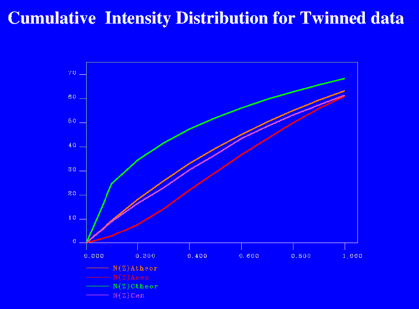

|
CCP4i: Graphical User Interface |
| Twinning |


|
PLEASE NOTE: Most of this has been taken directly from chapter 6 of the SHELX-97 Manual.
A typical definition of a twinned crystal is the following: "Twins are regular
aggregates consisting of crystals of the same species joined together in some definite
mutual orientation" (Giacovazzo, 1992). For this to happen two lattice repeats in the
crystal must be of equal length to allow the array of unit cells to pack compactly.
The result is that the reciprocal lattice diffracted from each component will overlap,
and instead of measuring only Ihkl from a single crystal, the experiment
yields
km Ihkl(crystal1) +
(1-km) Ih'k'l'(crystal2)
For a description of a twin it is necessary to know the matrix that transforms the hkl indices of one crystal into the h'k'l' of the other, and the value of the fractional component km. Those space groups where it is possible to index the cell along different axes are also very prone to twinning.
Experience shows that there are a number of characteristic warning signs for twinning. Of course not all of them can be present in any particular example, but if one finds several of them, the possibility of twinning should be given serious consideration.
The following points are typical for non-merohedral twins, where the reciprocal lattices do not overlap exactly and only some of the reflections are affected by the twinning:
The following cases are relatively common:
"I should like to thank Regine Herbst-Irmer
who wrote most of this chapter."
Full size versions of the example pictures can be viewed by clicking on the iconised ones.
|  | Cumulative intensity distribution for twin |
More information on twinning can be found at: Fam and Yeates' Introduction to Hemihedral Twinning, which includes a Twinning test.
And a concise but in-depth description of twinning has been written by E. Koch for the International Tables Volume C (1992), pages 10-14.
|
|
{kind=link}